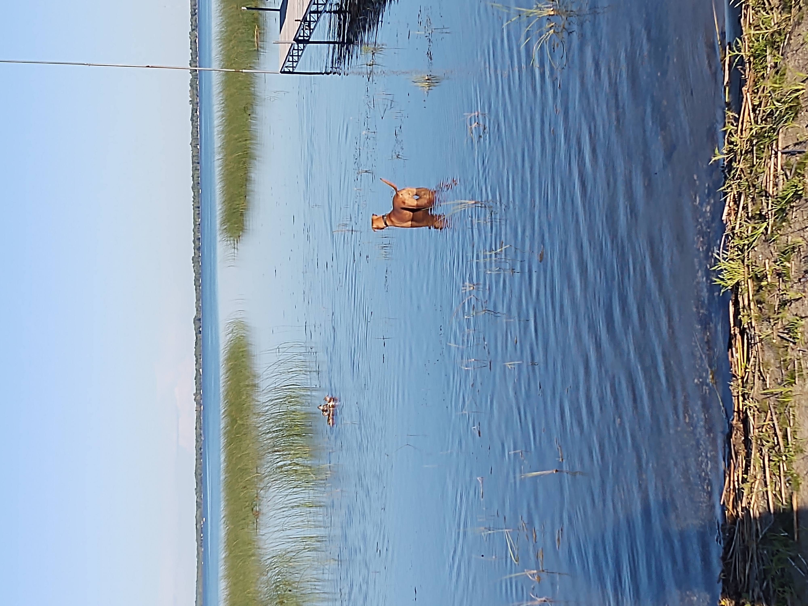

Perspective is a funny thing. It was just a year ago now that I spent the 4th of July with a friend in Southern Missouri discussing how hot it was on a 100 something degree day as we headed off to go swimming. Now one year later I’m in Northern Minnesota having weekly arguments with a co-worker that just because the temperature is over 70 degrees does not make it hot outside.
Yes, there have been a few 80 degree days up here this year that have boarded on being hot, but not what I have gotten used to as hot and definitely not what my mother would consider being hot. It is definitely a perspective thing as right now with temperatures sitting in the upper ‘70s and just started to wear shorts and short-sleeved shirts. The neighbourhood children, on the other hand, started swimming in the lake a few weeks ago when it got past 65.
I do release that it was not that long ago that I firmly believed as all Minnesota children do, that anything above 65 degrees is in fact swimming weather. Now that belief has shifted and I feel like the water is way too cold when the air is in the mid-’60s. I have been bold enough to wade in the water on some of the warmer days in the mid to upper ‘70s.
The current plan is to give it another week to be warm and then be brave enough to go swimming instead of just wading.
My only concussion as to the why of this change in belief is that my perspective on what hot is changed when I got used to my last environment or my last environment made me weak to cooler weather.